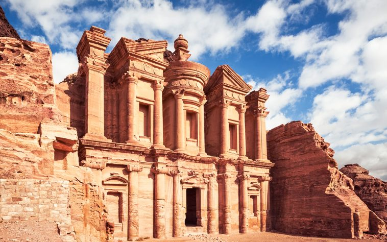
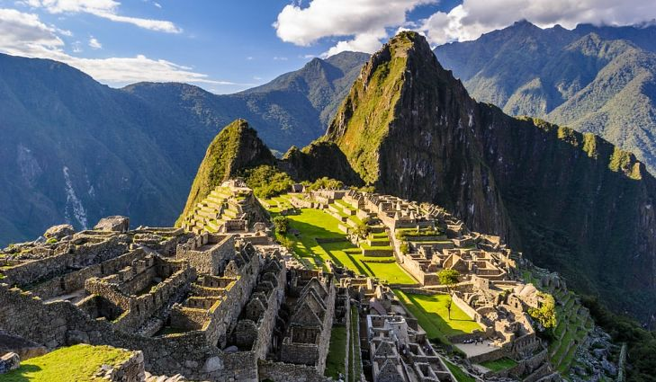
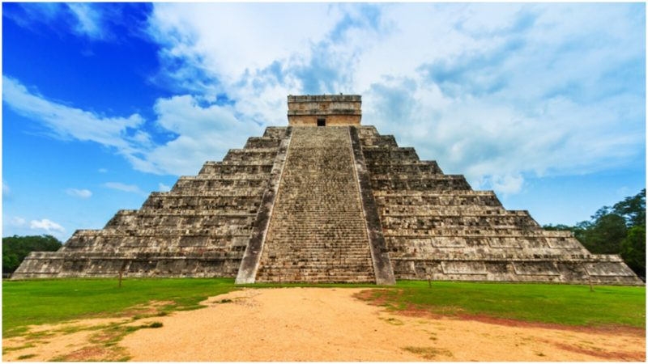

The Seven Wonders Album
The Taj Mahal
A white marble structure built by Shah Jahan. Situtated by the Yamuna River in Agra. Click to view the album.
The Colosseum
An oval amphitheatre in the centre of Rome. Largest amphitheatre in world. Click to view the album.

Petra
An archaeological site in Jordan's southwestern desert containing tombs and temples. Click to view the album.
The Great Wall Of China
Series of forti- fication systems built across the northern borders of china. Click to view the album.
Christ The Redeemer
An Art Deco stature of Jesus Christ in Rio created by French sculptor Paul Landowski. Click to view the album.

Machu Picchu
An Incan citadel set high in the Andes Mountains in Peru abandoned in 1572. Click to view the album.

El Castillo
Also known as the Temple of Kukulcan, is a Mesoamerican step-pyramid that dominates the center of the Chichen Itza Click to view the album.